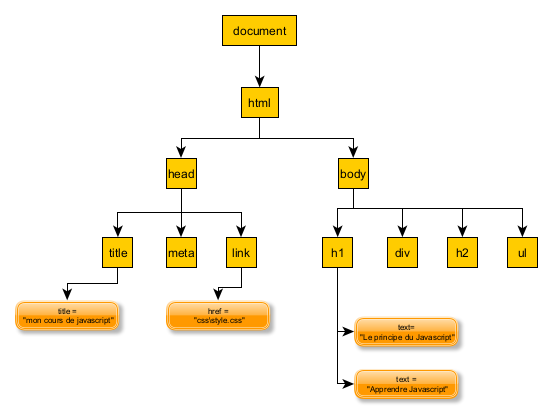

Le javascript pour donner du tonus à notre code

Le principe!¶
Le cours précédent rappelle que le HTML décrit le contenu des pages web que le CSS vient par la suite formater. Il ne s'agit pas d'un langage de programmation et on ne peut donc pas interagir avec des événements comme le clic de la souris, l'appui sur une touche du clavier ou le chargement d'une page...
Le javascript est un langage de programmation créé en 1995 et intégré au navigateur Netscape Navigator afin de dynamiser les pages webs statiques. À une action d'un utilisateur, on peut par exemple associer un comportement comme le changement de couleur d'un texte, d'un paragraphe,...
Le Document Object Model (D.O.M)¶
Le DOM est la représentation schématique et hiérarchique de votre page web permettant de visualiser l'ensemble des balises HTML qui la constituent.
Le javascript agit sur les objets du DOM. Il les repère soit par le nom de leur balise soit par leur idendifiant (id) ou bien leur classe (class).
L'exemple de base...¶
Nous utiliserons le code HTML index.html et la feuille de style style.css qui va avec ...
À faire: Construire son arborescence
- Créer un dossier
WEBJScontenant les dossiersimg, cssetjs. Attention de bien respecter la casse! - Téléchargez puis enregistrez le fichier
index.html(clic droit->code source de la page) à la racine du dossierWEBJSet le fichierstyle.cssdans le dossiercss. - Visualiser alors le fichier
index.htmlavec un navigateur et appelez le professeur pour validation.
Le DOM de ce code HTML, volontairement incomplet, pourrait ressembler à cela:

Et c'est parti!¶
Les exercices suivants n'ont rien d'original. Ils montrent seulement comment intégrer du code javascript dans un document HTML afin de répondre à des besoins spécifiques...
Une manipulation simple!¶
À faire: Mon premier js...
- Intégrer entre les balises
<head>le code suivant: - Enregistrez votre fichier HTML et rafraîchissez le navigateur afin de voir apparaître l'effet attendu.
Ce code est exécuté suite à un événement: le chargement de la page web. Mais on peut modifier cela!
À faire: Mon deuxième js...
- Effacer les balises
<script>précédente. - Insérer dans le corps du document HTML juste après la balise
<body>, le code suivant: - Enregistrez et rafraîchissez!
On a déjà exposé dans un cours précédent notre volonté de séparer les codes selon leur utilisation: le css dans un dossier css, les images dans un dossier img,... Continuons ce rangement efficace en enregistrant le code javascript dans son dossier de destination js.
À faire: Mon troisième js...
- Avec notepad, ouvrer un nouveau document (language = javascript) que vous enregistrez sous le nom
monpremierjs.jsdans le dossierjs. - Copiez-y le code suivant:
3.Il faut maintenant indiquer au document courant où se situe le code javascript. Insérer alors le code suivant dans l'entête (balises <head>) de la page HTML:
onclick l'exécution de la fonction ma_fonc_test:
5. Enregistrez et rafraîchissez, tout doit fonctionner!
Remarquez!
- Chaque instruction javascript se terminer par un
;. Son oubli est souvent une source d'erreur... - Il y a une différence que l'on retrouve dans le langage
pythonentrema_fonc_testetma_fonc_test(): le premier invoque le nom d'une fonction le deuxième l'exécute !
En mode debug...¶
Souvent, le code javascript est long et complet et disons-le ne fonctionne pas toujours comme on le voudrait... Aussi prenons-nous l'habitude d'imprimer dans la console javascript l'état de certaines variables pour savoir si elles évoluent dans le bon sens... On retrouve cette habitude dans d'autres langages de programmation, en python par exemple...
On appelle débugger, l'action de rechercher et corriger les erreurs d'un programme informatique. L'utilisation des print pour visualiser l'état des variables, permet souvent de débugger...
Mais où se trouve la console javascript???
Dans Firefox, tapez F12 et vous verrez apparaître plusieurs onglets dont la console...
Pour imprimer dans la console, rien de plus simple!
À faire: print dans la console...
- Ajouter à la fonction
ma_fonc_test(), l'instruction suivante: - Enregistrez, rafraîchissez et visulisez dans la console que tout va bien!
- Échangez les deux instructions et commentez ce qui se passe.
Remarquez la présence du ; à la fin de chaque instruction et la position des accolades qui englobent les deux instructions: à l'appel de la fonction, les deux instructions sont alors exécutées!
Bouton et événements¶
Dans la partie précédente, nous avons:
- créer un bouton: les balises HTML du même nom permettent de le faire
- associer un événement à l'appui sur ce bouton: le bouton a un attribut
onclickauquel on peut asocier une fonction javascript à condition qu'elle soit bien entendu codée dans le fichier js.
On se propose ici de créer de nouvelles fonctionnalités pour montrer ce dont javascript est capable de faire.
Un bouton plus stylé!¶
Notre bouton n'est pas très joli... modifions son style!
À faire: en mode stylé!
- Dans le fichier
style.css, ajouter le code suivant: - Enregistrez, rafraîchissez et admirez!
Pour centrer le bouton, nous allons utiliser une astuce qui consiste à la positionner dans une zone, un conteneur que nous allons centrer. Nous utiliserons alors les balises <div></div>.
À faire: utiliser un conteneur
- Ajouter les balises
<div></div>taggées par la classeb_hautautour des balises<button>: - Dans le css, on va indiquer que cette balise taggée
<div>doit être centrée: - Enregistrez et rafraîchissez.
- Enfin, taggez la balise
<div>contenant les autres boutons pour uniformiser notre affichage.
Changement d'apparence¶
Les paragraphes existants ont un background-color en rgb(20,100,100) défini dans la feuille de style. On souhaite ici modifier cette couleur en appuyant sur notre bouton de test...
L'algorithme est donc:
- rechercher tous les éléments
<p>dans le DOM - changer leur bg
- associer l'étape 1 et 2 au clic du bouton.
À faire: changer le bg
- Compléter le fichier
monpremierjs.js(inutile d'effacer son contenu existant) comme suit: - Changer le nom de la fonction javascript dans l'attribut
onclick:
L'affichage de la constante elt permet de connaître son type et son contenu. En fouillant un peu, on voit qu'il y a quatre paragraphes trouvés et on peut aussi explorer leurs attributs...
Même si cela fonctionne, on peut faire beaucoup mieux en utilisant les classes ou les identificateurs.
À faire: taguage général!
- Taguer les balises
<p>selon le principe suivant: la premier balise est<p id ="p1">, la deuxième<p id ="p2">, etc... - Modifier la fonction js précédente:
On peut aussi changer d'autres styles que celui du background. Essayez par exemple les changements suivants:
À faire: quelques changements sympas!
À ajouter dans le corps de la fonction précédente (entre les accolades sinon cela ne fonctionnera pas...)
En résumé!
On tague les différents éléments du DOM afin de pouvoir y accéder par un programme javascript:
- si on tague par un
idalors la recherche se fait par l'instructiondocument.getElementById(nom_id) - si on tague par une
classealors la recherche se fait par l'instructiondocument.getElementByClassName(nom_class)
Exercice de synthèse
Supprimez le premier bouton du document HTML puis:
- en appuyant sur le bouton de gauche, le style des paragraphes changent : vous changerez les couleurs, les fontes, les tailles, ... et chaque paragraphe aura son propre style.
- en appuyant sur le bouton de droite, le style revient dans sa configuration originale...
- pour les meilleurs d'entre vous, changez aussi le style des listes (balises
<ul>)!
Création de nouveaux objets dans le DOM¶
Le javascript permet aussi de modifier ou créer du contenant dans le document HTML himself!
À faire: modifier un fils...
- Insérer après la balise
<body>, le code HTML suivant: Cela crée le bouton que nous avions effacé à l'exercice précédent et un paragraphe vide... - Créer un nouveau fichier javascript avec notepad, nommé
monscript.jsque vous enregistrez dans le dossierjs. - Ajoutez-y le code suivant:
- Enfin, n'oubliez pas de changer le chemin de la source js dans les balises
<script>pour pointer vers le bon fichier js... - Enregistrez, rafraîchissez et visualisez...
En résumé!
La méthode .innerTHML permet de modifier le contenu d'une balise HTML
À faire:Utiliser la méthode .innerTHML
- Taguer le premier titre
<h1>parid = premiertitre. - Compléter la fonction précédente pour que ce titre change en
Qu'est ce que le Javascript?
L'affichage de l'heure est dynamique mais invariant: quiconque appuie sur le bouton verra le même message. Ne peut-on pas personnaliser cet affichage?
À faire: ouvrir une fenêtre de saisie
- Dans le fichier
monscript.js, ajoutez le code suivant: - Changer l'
iddu paragraphe<p>dedemoennom. - Enfin, associer au clic de bouton la bonne fonction:
Autre possibilité: insérer une zone de saisie au sein du document HTML.
À faire: insérer une zone de saisie
- Ajouter le code HTML suivant sous le premier paragraphe(celui où
id = nom): - Ajouter la fonction javascript suivante dans le fichier
monscript.js. - Et si vous voulez centrer tout cela, ajouter à la feuille de style, les instructions suivantes:
Les exemples précédents montrent des usages répandus du javascript: modification du DOM, interaction avec l'utilisateur, ... Bien entendu les possibilités sont vastes mais on peut déjà faire beaucoup de chose...
Exercice de synthèse
- Construire une page web qui permet de saisir deux nombres et d'afficher leur somme.
- Même exercice mais les nombres saisis sont binaires!